Outreach
A huge part of our work and an important aspect of FIRST culture.
I. Local Community Outreach
Outreach in our local Greater Boston community to raise awareness about 3737 and recruit new members.
November Pi Run (March 3-4, 2017)
The Natick Educational Foundation, an organization that collects money to run educational programs in Natick, invited us to present our robots at their November Pi Run. They have sponsored RoboNatick in the past, and invited us to demonstrate our robots for a fundraiser of their own. We brought our swerve drive chassis and preliminary robot as well as a few glyphs and a cryptobox to the event to let visitors drive. We talked to visitors about our team and the FIRST system. We even spoke to a few parents who have been interested in starting an FLL JR team for a local elementary school. We also invited our sister teams 6032 and 5436 to the Pi Run to help us out. The event was a success, and we had a lot of fun doing it.
- 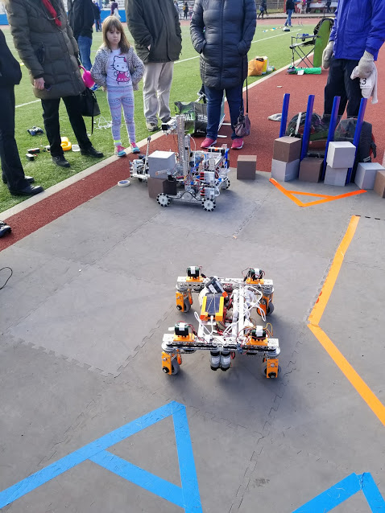
-

Boston Children's Hospital Health and Safety Fair (September 16, 2017)
Boston Children’s Hospital invited us to demonstrate our robot at their fair to encourage STEM in the community. For 4 hours, we allowed kids to drive the robot around, lifting the cap ball and shooting particles. There were at least 50 kids who drove the robot throughout the day, many of whom seemed very interested about robotics. While the kids were driving our robot, we explained the technology behind our robot to the parents, and described FTC and FIRST. It was a heartwarming experience and a great, fun time.
- 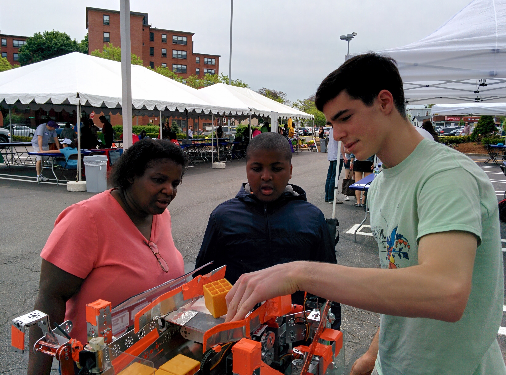
-

- 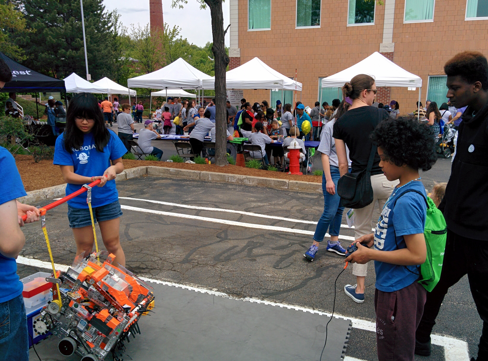
- 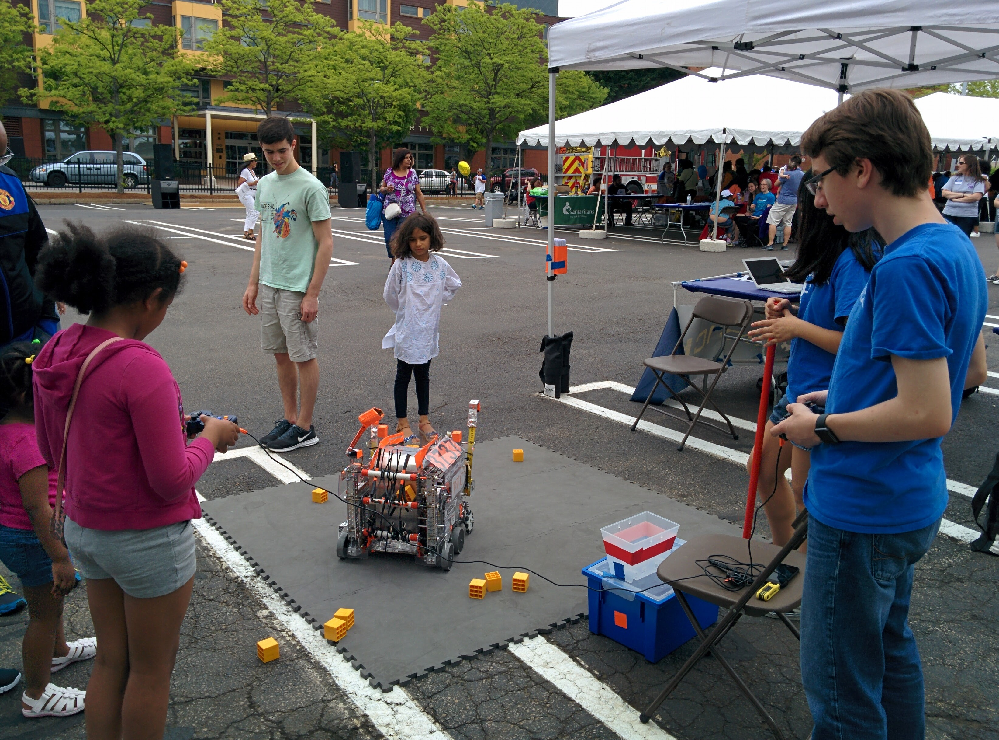
- 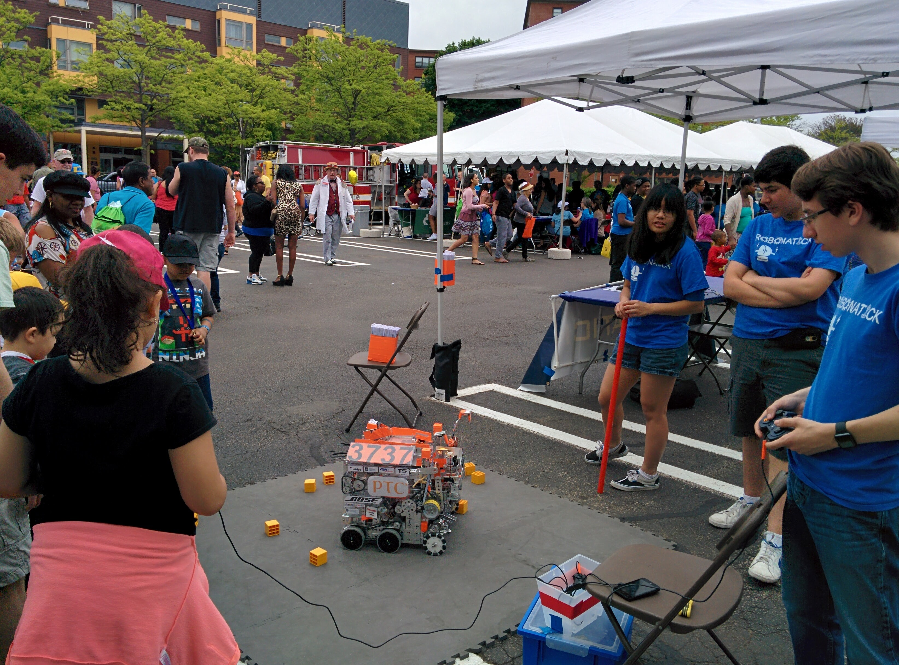
- 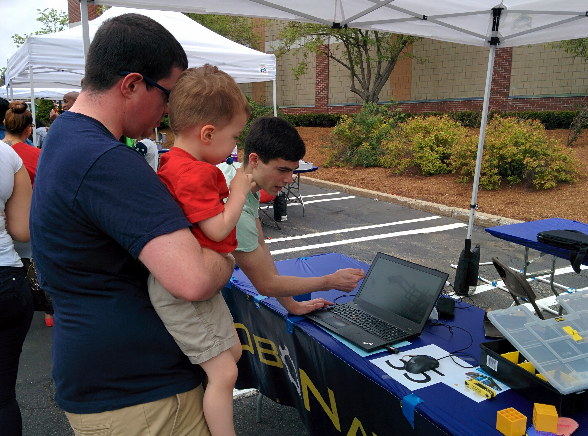
Natick Days Showcase (September 9, 2017)
At the beginning of every school year, Natick hosts a town-wide event called Natick Days. The town common is filled with booths from different organizations trying to advertise themselves and fundraise. Together with the other two RoboNatick teams, we had a booth where we fundraised and a small robot for kids to drive around in order to generate interest in robotics and RoboNatick. This year, we used a simple chassis for people to drive around since our actual robot was at Kickoff. While kids drove the robot, we talked to parents about FIRST and our team, and even talked to some representatives from local companies who came over and expressed interest in us.
- 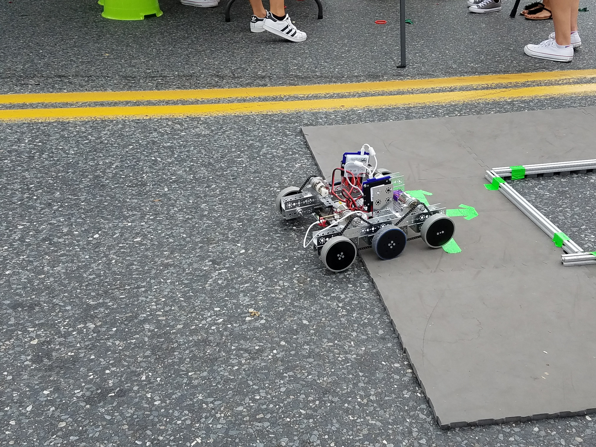
- 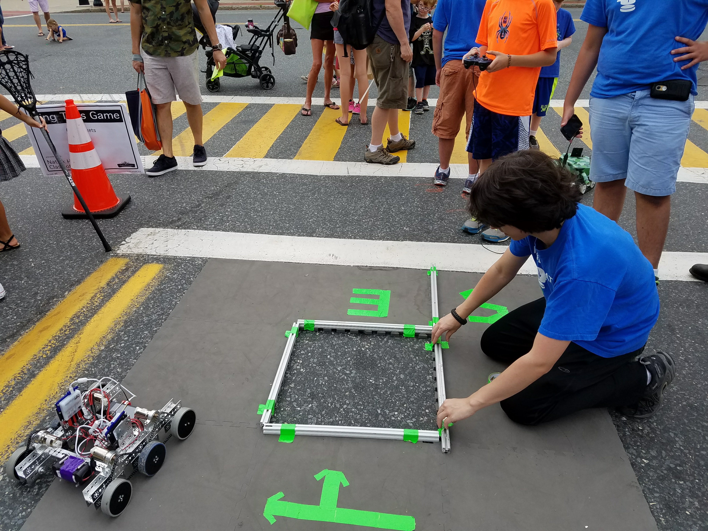
-

- 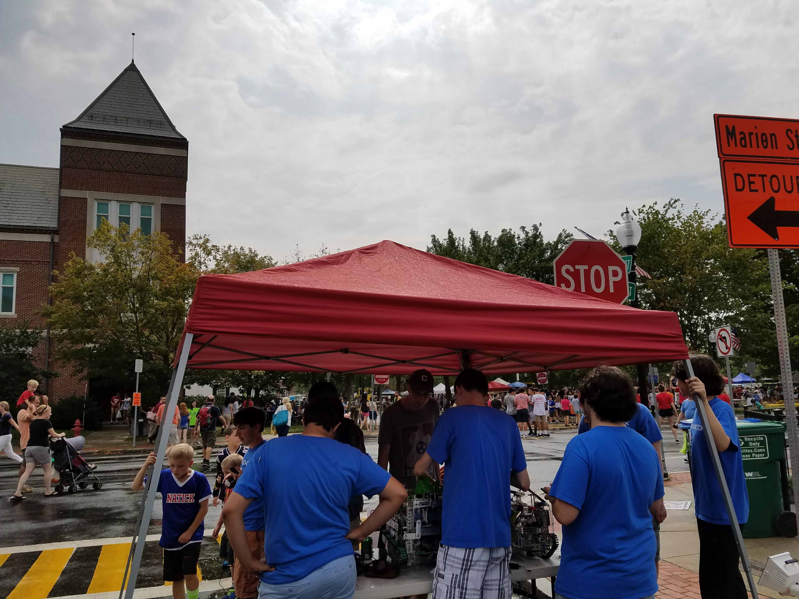
RoboNatick Land and Sea Summer Camp (July 3-14, 2017)
One of our longest running outreach events is our annual Land and Sea Robotics Summer Camp. We host a 2-week-long camp for middle schoolers that introduces them to robotics. Our curriculum is divided into two sections. First, we have them build out small ROVs from a kit, and them around in the pond behind the high school. We then move on to using NXTs to build small robots to complete a series of challenges, ending with the kids building sumo bots. With this curriculum, we teach gear ratios (fraction math), torque and angular motion, buoyancy, wiring, and computer programming through project based learning. We have around 20-30 kids participate each year, and this camp is one of our biggest sources of new members. Every year, many new RoboNatick members join who were once campers at our camp. We will continue this camp for years to come, as it is a central part of the RoboNatick culture.
4th of July Parade (July 4, 2017)
Every year RoboNatick marches in Natick’s 4th of July parade. This year though, we decided to do something a little bit special, since members from other RoboNatick teams came along with us. Additionally, we had a cart that carried our competition robot, to show off to the crowds. The parade was a lot of fun, and we got lots of shoutouts.
Presentation at Kennedy Middle School (June 15, 2017)
This community outreach is part of the same series of outreach as the one done at Wilson Middle School. In order to recruit new members for Hank’s Tanks we went from classroom to classroom demonstrating our robot.

Presentation at Wilson Middle School (June 8, 2017)
In order to recruit new members for Hank’s Tanks, help advertise for the middle school FLL team, and liven up the cafeteria atmosphere with some cool robots, we went down to Wilson Middle School and lifted some cap balls and shot some particles. It also helped new members on our team get an idea on how we do community outreach. We recruited several new members for RoboNatick, two of which have joined the Hank’s Tanks family this year.
Step-up Night (May 4, 2017)
Every year, Natick High School hosts rising freshmen at Step-up Night, where they can get a feel of Natick High School life and the available extracurricular activities. A this year’s Step-up Night, two of our members, as well as members from 5436 and 6032, brought the center vortex to the event along with our robots to give students a one-on-one opportunity to see what RoboNatick and FIRST is like. After the event, we had 38 students who put their email on our email list, making it a very successful night.
April Vacation STEM Camp (April 17-20, 2017)
This was the second year that RoboNatick has held April STEM camp. After reflecting on our mistakes and successes of last year, this year’s camp was much more successful than last year’s already successful camp. The goal of the camp is to engage middle school students early on in STEM and provide a foundation for them that may later guide them in their learning. Each day represented a different branch or branches of STEM.
- 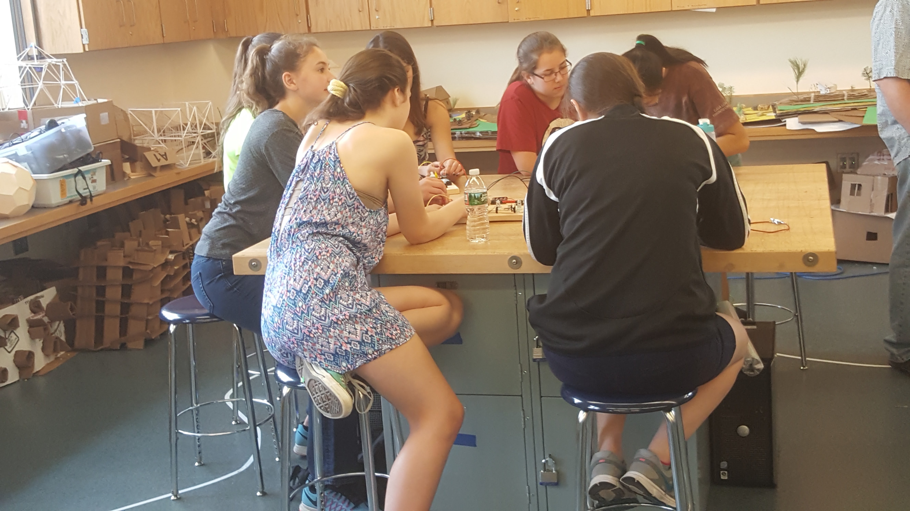
-

- 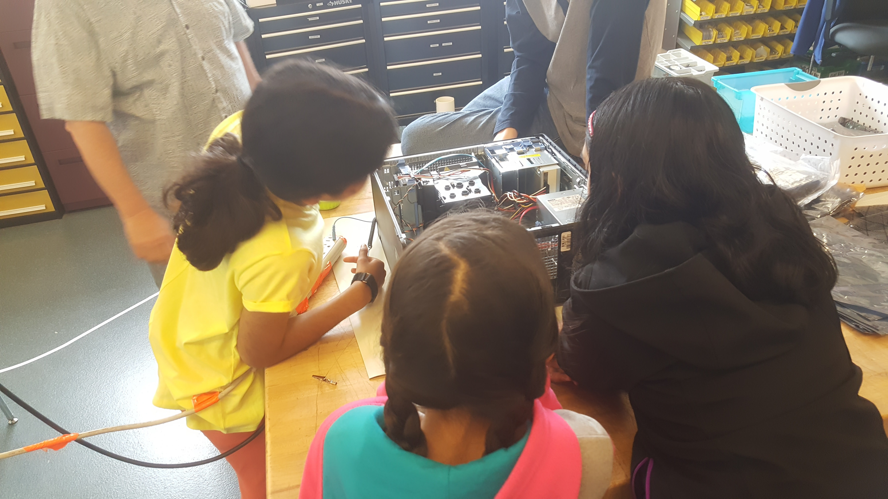
- 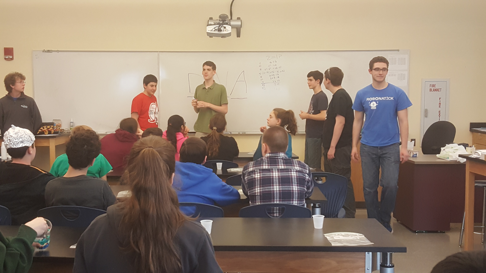
- 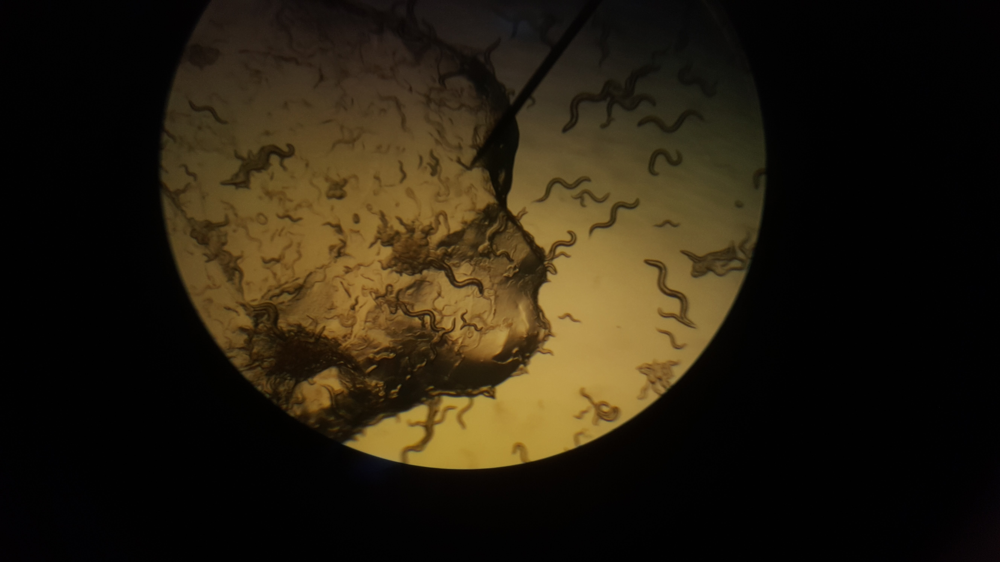
- 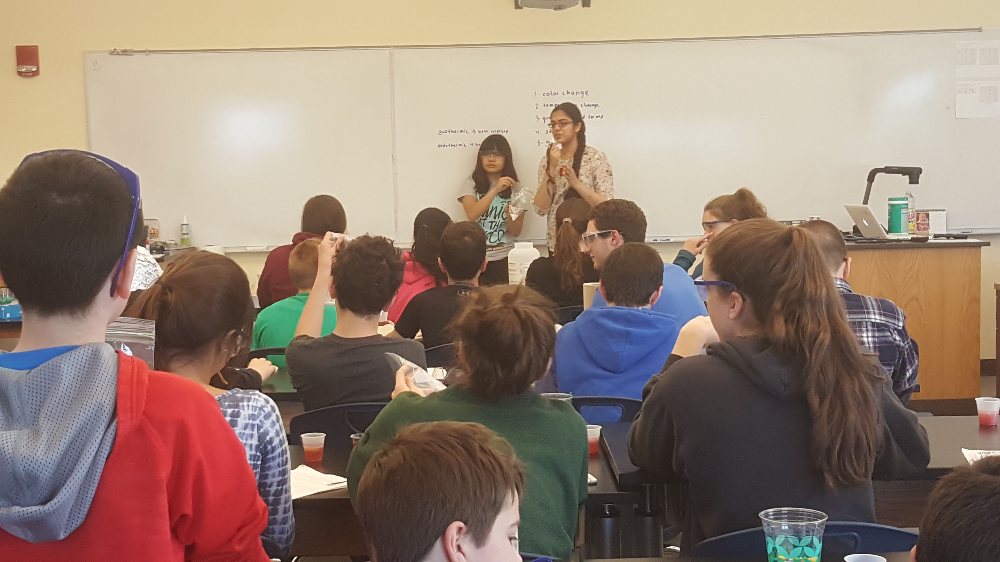
-

- 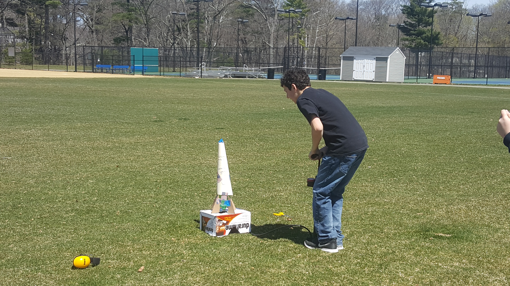
Morse Institute Library Showcase (April 4, 2017)
To continue spreading the word of FIRST and inspiring children to join their local robotics team, we demonstrated our robot at the Morse Institute Library in Natick. We worked closely with the librarians to figure out how we could effectively create a successful evening. The event was open to the public, and we had many children show up to the event (it was very loud!). We let the visitors shoot into the center vortex and drive the robot around. We also saw an engineer from Mathworks, and explained the workings of our robot to him. He gave us some very helpful tips for potential improvements on the robot.
II. FIRST Outreach
Outreach in collaboration with FIRST to advertise the program at events.
Maimonides Robotics Teams' Visit (October 25, 2017)
The Maimonides robotics teams were referred to us by Steve Cremer. They were looking for some guidance for this year’s game, so we invited them to our workshop to explain our brainstorming process and helped them develop ideas for Relic Recovery.

RoboExpo with PVC Pirates (September 23, 2017)
FRC team 1058 PVC Pirates, who we met at the Boston GreenFest, invited us to demonstrate our robot at their annual RoboExpo. In this PVC Pirate-hosted event, they invite many FIRST teams to bring their robots to the Pheasant Lane Mall in Nashua to show and demonstrate them to the public. We demonstrated this year’s robot challenge and interacted with shoppers. We also answered many questions that people had about how our robot works andFIRST opportunities, ideals, and programs. Specifically, many people asked about about last year’s robot challenge, upcoming competitions, and the difficulties we face throughout our season. It was a lot of fun, and we got to meet new teams who graciously shared their experiences with starting an FLL team, which we plan to do soon.
FTC Kickoff Demo (September 9, 2017)
We were invited by the Massachusetts director for FTC to demonstrate our robot at the 2017-2018 season kickoff at Needham High School. We answered questions about how we made it to the FIRST Championship, such as design processes, kit recommendations, outreach tips, and notebook tips. We also answered questions on sustainability, such as reaching out for sponsorships and setting up fundraisers. 3737 alumnus Albert Gerovitch graciously came from MIT to help out with the kickoff demo. We also made a vlog about it which can be found on our youtube channel.
Boston GreenFest (August 11-13, 2017)
The Boston GreenFest is a large public event that is hosted every year for 1 weekend at Faneuil Hall and Boston City Plaza. They bring a diverse range of groups to set up booths related to art, biking, food, culture, education, and many more topics. Steve Cremer, a regional director for NEFIRST, invited us to bring our team and our robot to set up a demo at GreenFest. We met lots of other teams, and have even stayed in contact with one of them, FRC team 1058 PVC Pirates, to help them out at their annual RoboExpo.
Cambridge Science Carnival & Robot Zoo Booth (April 15, 2017)
In order to further spread the word of FIRST, we, along with Team Infinity, The Parity Bits, The Brainstormers, Gluten Free, We Are Robo, and Canton Robodogs, set up a booth at the Cambridge Science Carnival and Robot Zoo. At the event, we demonstrated the robot, explained how it works, and described what our team does. Many people came by and asked questions, and seemed very interested in our work. It was a lot of fun, and we hope to collaborate with other teams again sometime in the future.
- 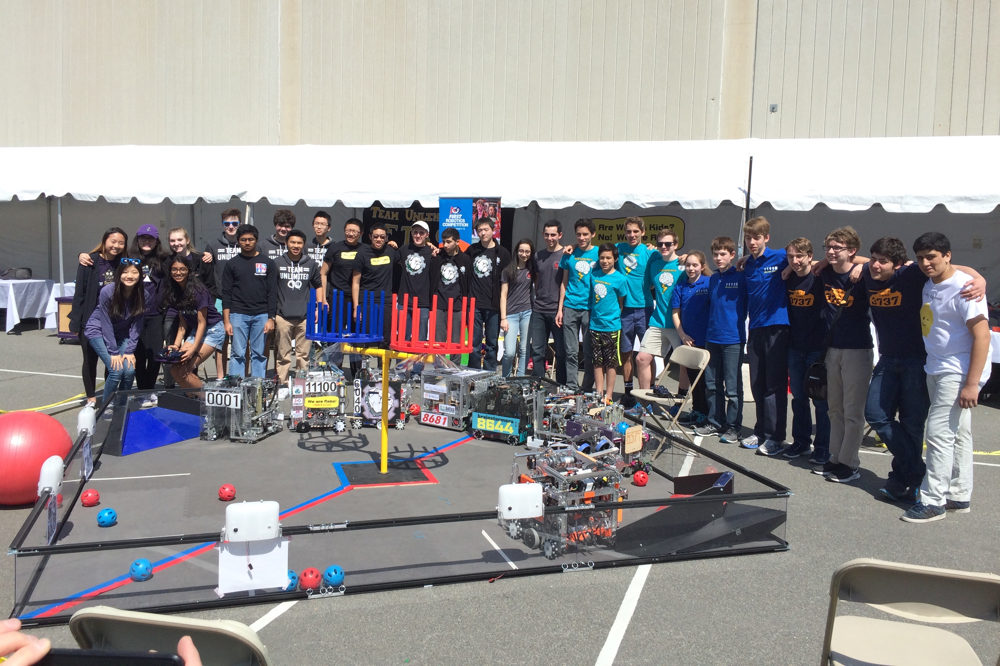
-

- 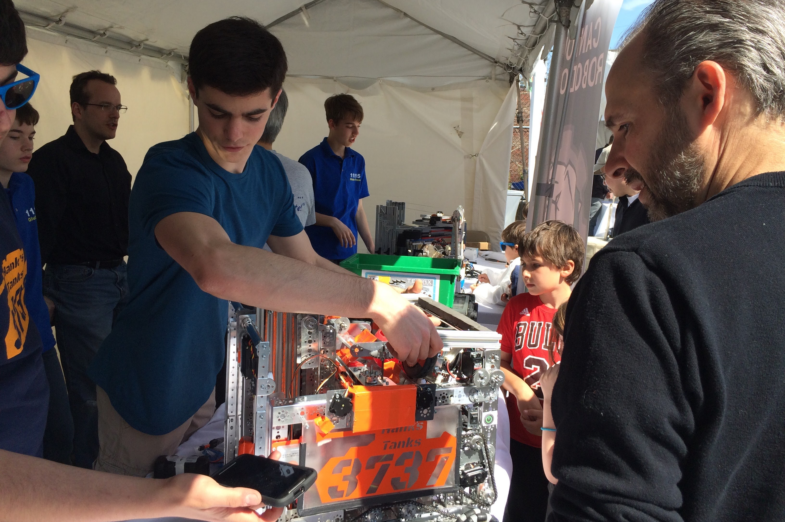
- 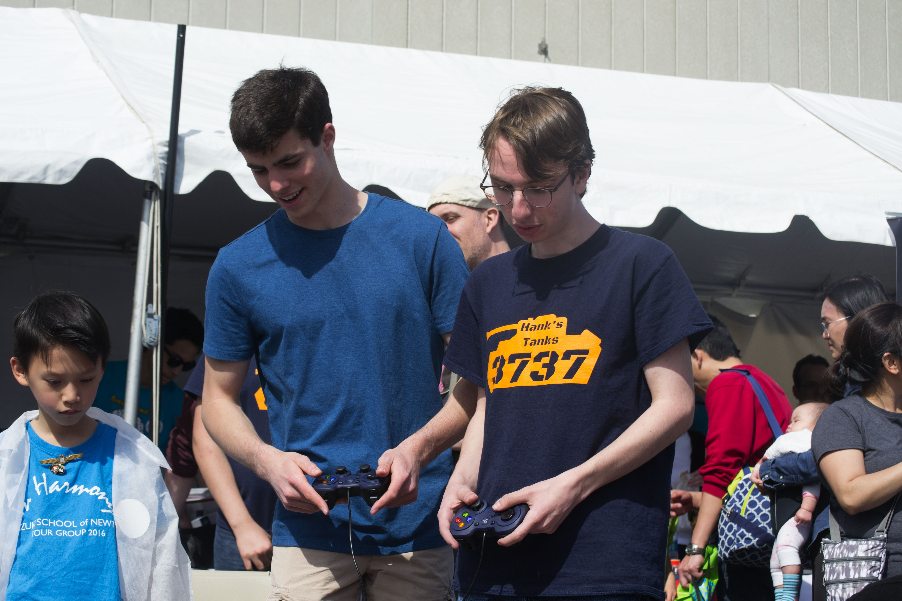
III. Fundraising
Outreach events where we fundraise for our team and RoboNatick.
Roomba Raffle (December 22, 2017)
To fundraise for RoboNatick, together with 5436 and 6032, we reached out to iRobot for a charity roomba. They graciously gave us one to raffle off (a 900 dollar piece of equipment). Similarly to our Krispy Kreme fundraiser, we advertised our raffle throughout the Natick High community. We made a profit close to 900 dollars and we hope to do it again.

Krispy Kreme Fundraiser (December 15, 2017)
To fundraise for RoboNatick, together with 6032 and 5436, we reached out to Krispy Kreme to set up a large order for donuts. We sold donuts to family members, Natick High school teachers and students, and even to some of our members’ bosses from work -- anyone we could find seeking delicious Krispy Kreme donuts. We made High School announcements through eblasts, morning announcements, and hallway TV monitors. It was a lot of fun, and we sold about 150 dozen donuts, earning over 1000 dollars!
NECN Making the Grade (April 19, 2017)
In order to gain popularity to recruit new members, potential sponsors, and donors for our gofundme, we asked NECN to give us a quick interview for their segment, “Making the grade”: a segment that interviews students in high school who exemplify hard-earned achievement. We wore all our Hank’s Tanks shirts, and Sam and Peter answered questions while Sean and Joe drove the robot. It was a lot of fun, and we were on TV!!
See the NECN article here!
IV. Other
Gracious Professionalism Video with 8644 Brainstormers (posted November 19, 2017)
As a veteran team, FTC 8644 Brainstormers, a fellow team from Massachusetts, wanted to create a video talking about the importance of gracious professionalism and asked several teams to be a part of their video. They asked us to read a few lines. Although it was a very quick assignment, we are glad that we helped them spread gracious professionalism.
PerkinElmer Tour (October 24, 2017)
PerkinElmer is the first company that we have reached out to this season. They graciously invited us to their laboratories. They showed us around, showing off their engineering projects. They showed us robots that aid scientists in mass producing scientific experiments, help identify genes, test oils on the go for military usage, look at cells in vivid detail, and lots more. They even had a robot that could solve a Rubik’s Cube! We got to see how robotics is applicable in a commercial setting, which was really interesting. We learned a lot about robotics in the biomedical field and we hope to visit them again.

Drive Chassis Tutorial Videos with 9971 LanBros (published September 9, 2017)
At the East Super-Regional for Velocity Vortex, we had the pleasure of meeting FTC team 9971 LanBros from New Jersey. Since then, we have kept in contact with them and have developed a good friendly relationship with them. Over the summer, one of our team leaders, Joseph Maloyan, and their leader, Jack Nugent, were talking about their experiences with FTC, and both noticed how rookie teams struggle to starting their robot building process. In order to solve this issue, our teams collaborated to create youtube videos about creating a low-budget chassis with either actobotics or tetrix that will help rookie teams make it to at least their state competition. The videos received positive reviews, has started conversations on helping rookie teams, and has been used by other veteran teams that coach rookie teams. The video using tetrix can be found on our YouTube channel (or our website's Resources page) while the video using Actobotics can be found on the LanBros’ YouTube channel.
V. Upcoming
Starting an FLL Team
We are planning to start an FLL Team in our local community in the near future. We are still figuring out the details, but we're very excited!